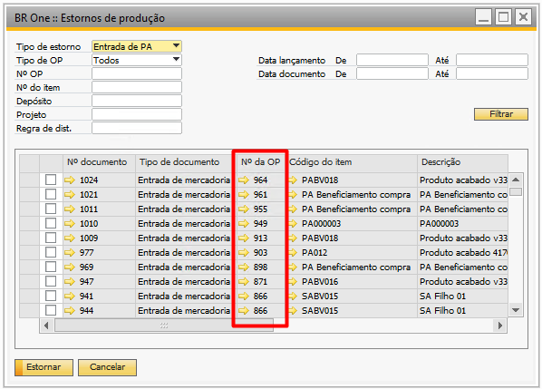
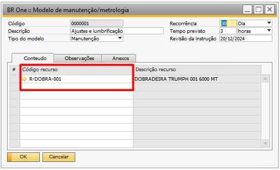
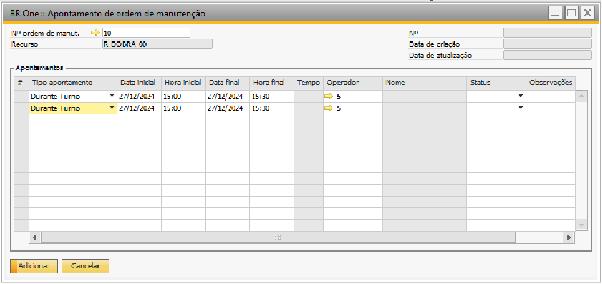
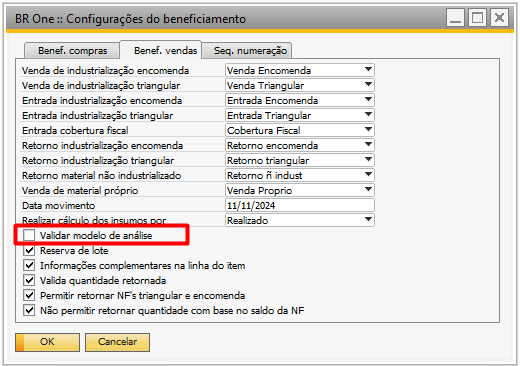
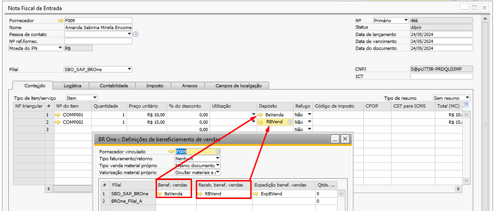
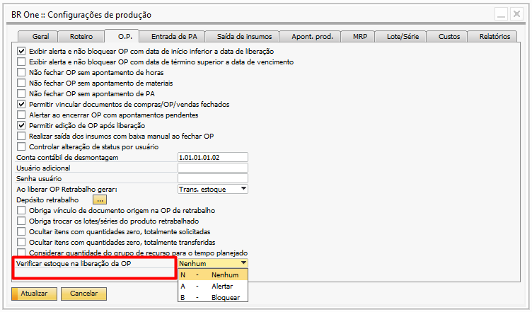
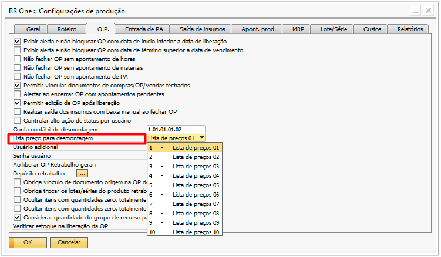

Versão 4.11.332
Nota
Melhoria
Ordenação decrescente pela coluna Nº da OP
Na atualização mais recente do BR One versão 332, foi implementada uma melhoria na exibição dos resultados na tela de estorno de produção. A partir dessa versão, os resultados passam a ser exibidos de forma decrescente pelo Nº da OP.
Não permitir inserir código de recurso duplicado no modelo de manutenção
Na atualização mais recente do BR One versão 332, foi implementada uma melhoria na tela de Modelo de Manutenção/Metrologia. Com essa atualização, o BR One agora impede a inclusão de códigos de recurso duplicados durante o cadastro.
Seta de ligação para código de centro de trabalho e Grupo de recurso
Na atualização mais recente do BR One versão 332, foi implementada uma melhoria na tela de Atualização de Custo/Hora. A partir dessa versão, o campo de código para as opções “Centro de Trabalho” e “Grupo de Recurso” passa a exibir uma seta de ligação. Ao clicar na seta, o usuário será direcionado diretamente para o cadastro correspondente à opção selecionada.
Centro de trabalho
Recurso
Validação para apontamento de manutenção
Na atualização mais recente do BR One versão 332, foi implementada uma melhoria no processo de apontamento de ordem de manutenção. Anteriormente, o BR One permitia realizar apontamentos duplicados, utilizando o mesmo tipo de apontamento, intervalo de data e hora, e o mesmo operador. Agora, para garantir maior clareza e facilitar a geração de relatórios, o BR One bloqueia e impede a realização de apontamentos com essas condições repetidas.
Validação de modelo de análise para itens da Nota Fiscal de Entrada
Na atualização mais recente do BR One versão 332, foi implementada uma melhoria no processo de beneficiamento de vendas relacionada à adição de notas fiscais de entrada do cliente.
Agora, foi incluído um novo parâmetro na aba Benef. vendas das configurações de beneficiamento, denominado “Validar modelo de análise”.
Ao marcar esse parâmetro, será validado se os itens presentes na NF de entrada possuem um modelo de análise vinculado. O comportamento do sistema será ajustado da seguinte forma:
Itens com modelo de análise vinculado: o recebimento será direcionado ao depósito configurado no campo “Receb. Vendas”.
Itens sem modelo de análise vinculado: o recebimento será realizado no depósito definido na coluna “Benef. vendas”, conforme as definições de beneficiamento de vendas cadastradas no PN.
Verificação de estoque na liberação da Ordem de produção
Na atualização mais recente do BR One versão 332, foi implementada uma melhoria no processo de ordem de produção (OP), especificamente na alteração do status para “Liberada”. Agora, o sistema verifica se há quantidade suficiente no depósito da linha do item da OP para produzir o item PAI.
Para isso, foi criado um parâmetro nas configurações de produção, na aba O.P, denominado “Verificar estoque na liberação da OP”, que oferece três opções de configuração: Nenhum, Alertar e Bloquear.
Por padrão, o parâmetro estará configurado como Nenhum, e a validação será aplicada às OPs dos tipos: Padrão, Retrabalho e Beneficiamento de Vendas.
Comportamento para cada opção:
Nenhum:
O comportamento do BR One permanece inalterado, sem validaçõesadicionais.
Alertar:
Caso o item da estrutura da OP não possua a quantidade planejada no depósito para produzir o item PAI, o BR One exibirá uma mensagem de alerta informando a insuficiência de estoque.
Apesar do alerta, será permitido alterar o status da OP de Planejada para Liberada.
Bloquear:
Caso o item da estrutura da OP não possua a quantidade planejada no depósito para produzir o item PAI, o BR One exibirá uma mensagem de alerta informando a insuficiência de estoque.
Nesse caso, a alteração do status da OP será impedida, e ela permanecerá com o status Planejada.
Determinação de custo(s) para o(s) componente(s) em OP de desmontagem
Na atualização mais recente do BR One versão 332, foi implementada uma melhoria no processo de desmontagem de Ordens de Produção (OP). Com essa nova funcionalidade, agora é possível determinar o custo dos componentes ao realizar o processo de desmontagem.
Campo: “Origem do custo” na OP de Desmontagem
Foi adicionado um novo campo denominado “Origem do custo”, disponível exclusivamente para OPs do tipo desmontagem. Este campo oferece as seguintes opções para definição do custo:
Percentual
Lista de preço
Custo médio
Parâmetro: “Lista de preço para desmontagem”
Nas configurações de produção, na aba OP, foi criado um parâmetro chamado “Lista de preço para desmontagem”, onde é possível definir qual lista de preço será utilizada no processo de desmontagem. Esse parâmetro será considerado apenas se a opção “Lista de preço” for selecionada na OP.
Comportamento:
Percentual
Quando esta opção for selecionada, um novo campo na grid da OP estará habilitado para edição, denominado “(%) custo por item”, onde o usuário poderá informar o percentual desejado.
O valor do custo unitário de desmontagem será calculado automaticamente e exibido na coluna “Custo unit. desmontagem”, com base na seguinte fórmula:
Lista de Preço
Nesta opção, o sistema buscará o custo dos itens na lista de preço definida no parâmetro “Lista de preço para desmontagem”. O comportamento é o seguinte:
Caso o item seja encontrado na lista, o custo será preenchido automaticamente.
Se não houver lista configurada ou o item não for encontrado, o sistema preencherá o custo como R$ 0,00.
Custo Médio
Quando esta opção for selecionada, o custo médio do item será recuperado automaticamente com base no depósito definido na linha da OP.
Vínculos de documentos de compra gerados através do MRP
Na atualização mais recente do BR One versão 332, foi implementada uma melhoria nos documentos de compra (Pedido de Compra e Solicitação de Compra) processados pelo MRP.
A partir desta versão, os itens que possuem a mesma data de vencimento/entrega não serão mais agrupados em uma única linha. Em vez disso, cada item será separado em linhas distintas, com o devido vínculo ao documento de demanda correspondente.
Novo Parâmetro: “Não agrupar linhas de compra por data de entrega”
Para habilitar essa funcionalidade, foi adicionado o parâmetro “Não agrupar linhas de compra por data de entrega” na aba MRP em Configurações de Produção.
Parâmetro marcado:
As linhas serão separadas individualmente, com vínculo direto ao documento de demanda.
Parâmetro desmarcado (comportamento padrão):
O BR one continuará agrupando os itens que compartilhem a mesma data de vencimento/entrega em uma única linha.
Exibição por ordem alfabética as etiquetas de impressão
A partir da versão 332 do BR One, foi implementada uma melhoria no processo de impressão de etiquetas. Agora, ao acessar a funcionalidade de impressão, as etiquetas serão exibidas em ordem alfabética, facilitando a organização e a localização das informações.
Nota
Correções
Ajuste na exibição da aba resultado
Realizado ajuste no MRP para corrigir inventário inicial/final das exibições por semana e mês. Realizado ajuste no MRP Hana para corrigir cenários em que a Ordem de Produção não está marcada como origem das demandas.
Ajuste na exibição do item em OP desmontagem
Realizado ajuste para exibir o item do cabeçalho no pedido e na transferência de estoque ao acessá-los por meio de Ordens de Produção do tipo desmontagem.